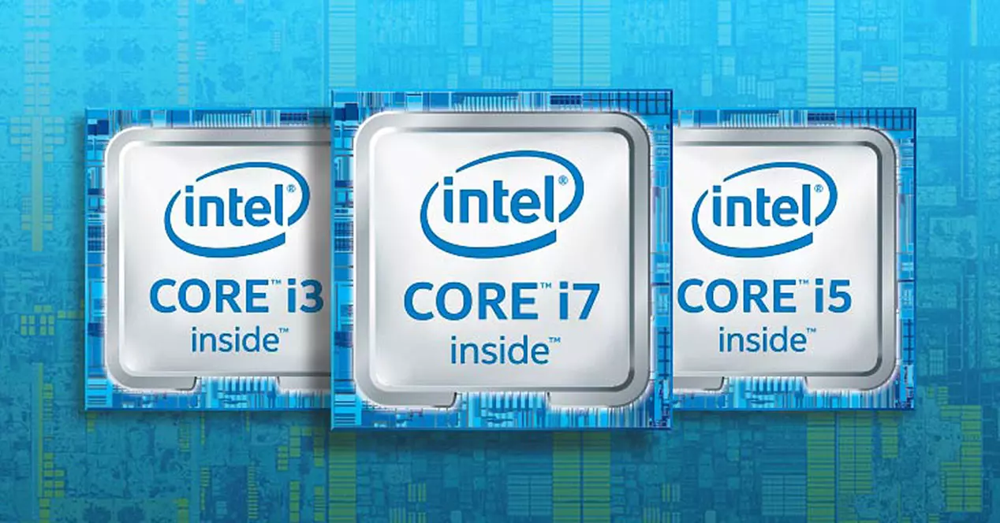
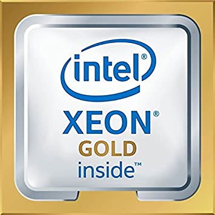
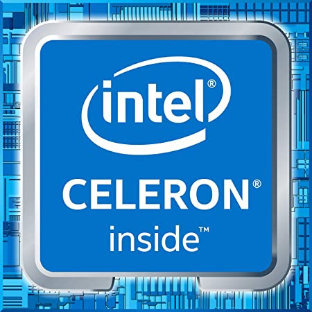

✸ Intel® Core™: los procesadores Intel Core son la familia insignia de CPU de Intel. Lanzados por primera vez en 2006, reemplazaron la popular línea Pentium como estándar para chips de procesador de alta gama. Están disponibles en diferentes modelos como Core i3, i5, i7, i9 y X, y llevan una nueva generación al mercado cada 1 o 2 años. Como regla general, 1) cuanto mayor sea el número Core “i”, mejor será el chip; y 2) cuanto más nueva es la generación, mejor es el chip. Por lo tanto, un procesador Intel Core I7 brindará un rendimiento más alto que un chip Intel Core i5, y un chip Core i9 de 11.ª generación funciona mejor (con más funciones) que un chip Core i9 de 10.ª generación.
✸ Intel® Core™ i3: estos valiosos procesadores ofrecen un rendimiento excepcional para tareas cotidianas.
✸ Intel® Core™ i5: experimenta un rendimiento excepcional en ordenadores domésticos y empresariales, con hasta 6 núcleos para videojuegos, creatividad y multitarea.
✸ Intel® Core™ i7: esta CPU incluye la potencia de hasta 8 núcleos para informática acelerada que admite conectividad, seguridad y videojuegos de gama alta.
✸ Intel® Core™ i9: ofrecen hasta 10 núcleos desbloqueados para vídeo fluido en 4K Ultra HD y 360, juego sólido y rendimiento en multitarea.
✸ Intel® Core™ serie X: los procesadores Intel® Core™ serie X son compatibles con equipos de sobremesa potentes y de alta gama brindando un rendimiento espectacular en videojuegos y para entusiastas.

✸ Intel® Xeon®: los procesadores Intel Xeon son la línea de CPU comerciales de la marca. Tienen velocidades de reloj comparables a las de la familia de procesadores Core. Donde brillan es su soporte para la memoria de corrección de errores ECC, que es imprescindible para aplicaciones informáticas críticas, como la informática financiera o científica. Aparte de los nombres de la generación "Lake", Intel denominó al modelo 2019 "Xeon de segunda generación" y a los modelos 2020, "Xeon de tercera generación". Esto no tiene nada que ver con las generaciones de chips más amplias como la décima y undécima generación. Si tiene una máquina más antigua con una CPU Xeon, no se preocupe. El primer procesador Xeon salió en 1998, con nuevos modelos lanzados regularmente desde entonces.
✸ Intel® Xeon® E: un rendimiento esencial, idóneo para las empresas, capacidad de expansión y fiabilidad para las soluciones de servidor básicas.
✸ Intel® Xeon® W: diseñado para los profesionales creativos, ofrece el rendimiento que necesita para los efectos visuales (VFX), el renderizado 3D y el CAD 3D en una estación de trabajo.
✸ Intel® Xeon® D: rendimiento optimizado para cargas de trabajo en entornos con almacenamiento y energía limitados, del centro de datos al perímetro inteligente.

✸ Intel® Pentium®: los procesadores Intel Pentium son CPU de nivel medio a básico que ofrecen un alto valor a precios más modestos que las líneas de procesadores Core y Xeon. Estos chips manejan velocidades de reloj similares a los chips Core más robustos, manteniendo los precios bajos al no incluir características premium como Turbo Boost e HyperThreading. Eso significa que si no está ejecutando aplicaciones que consuman procesadores para big data o diseño, un procesador Pentium puede ser una excelente opción.
✸ Intel® Pentium® Gold: los procesadores Intel® Pentium® Gold son ideales para las tareas informáticas cotidianas como la productividad básica y la navegación por páginas web de gran riqueza visual.
✸ Intel® Pentium® Silver: los procesadores Intel® Pentium® Silver posibilitan una sobresaliente experiencia para las videoconferencias, una conectividad inalámbrica más rápida y mayor autonomía de batería.
✸ Intel® Celeron®: los procesadores Intel Celeron son una línea de CPU de escritorio y portátil basada en el chip Pentium de 4 núcleos. Tienen menos memoria caché y velocidades reducidas, lo que las convierte en una opción mucho más asequible para aquellos que se apegan a actividades basadas en navegador y aplicaciones que no requieren mucho procesador. El primer procesador Intel Celeron apareció en 1998, con nuevas generaciones regularmente desde entonces. Los procesadores Celeron más nuevos son Celeron N4500 y Celeron N5100, con velocidades de reloj de 1,1 GHz y 1,8 GHz, y velocidades de ráfaga de 2,8 GHz.
✸ Intel® Celeron® serie G: es su única serie de esta familia de procesadores.
